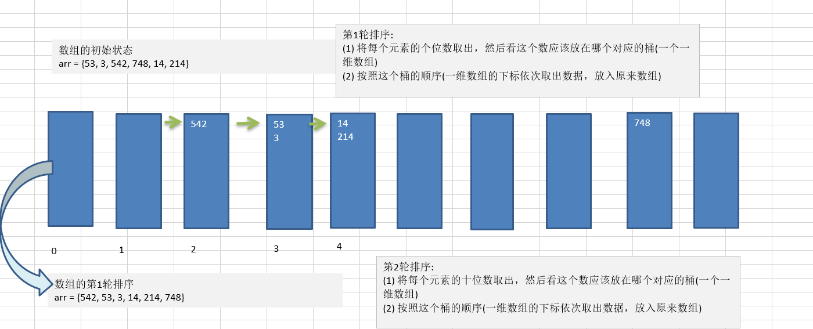
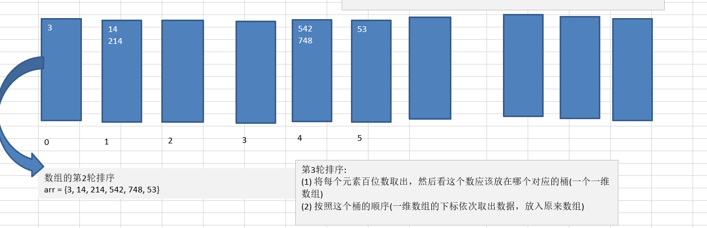
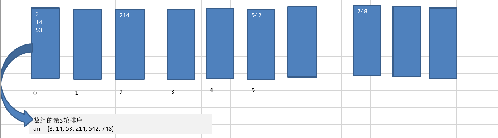

基数排序(桶排序)介绍:
- 基数排序（radix sort）属于“分配式排序”（distribution sort），又称“桶子法”（bucket sort）或 bin sort，顾名思义，它是通过键值的各个位的值，将要排序的元素分配至某些“桶”中，达到排序的作用
- 基数排序法是属于稳定性的排序，基数排序法的是效率高的 稳定性排序法
- 基数排序(Radix Sort)是桶排序的扩展
- 基数排序是 1887 年赫尔曼·何乐礼发明的。它是这样实现的：将整数按位数切割成不同的数字，然后按每个
位数分别比较。
基数排序基本思想
将所有待比较数值统一为同样的数位长度，数位较短的数前面补零。然后，从最低位开始，依次进行一次排序。
这样从最低位排序一直到最高位排序完成以后, 数列就变成一个有序序列。
基数排序图文说明
将数组 {53, 3, 542, 748, 14, 214} 使用基数排序, 进行升序排序
第一轮

第二轮

第三轮

代码实现
1
2
3
4
5
6
7
8
9
10
11
12
13
14
15
16
17
18
19
20
21
22
23
24
25
26
27
28
29
30
31
32
33
34
35
36
37
38
39
40
41
42
43
44
45
46
47
48
49
50
51
52
53
54
55
56
57
58
59
60
61
62
63
64
65
66
67
68
69
70
71
72
73
74
75
76
77
78
79
80
81
82
83
84
85
86
87
88
89
90
91
92
93
94
95
96
97
98
99
100
101
102
103
104
105
106
107
108
109
110
111
112
113
114
115
116
117
118
119
120
121
122
123
124
125
126
127
128
129
130
131
132
133
134
135
136
137
138
139
| public class RadixSort {
public static void main(String[] args) {
int arr[] = { 53, 3, 542, 748, 14, 214 };
radixSort(arr);
}
public static void radixSort(int[] arr) {
int[][] bucket = new int[10][arr.length];
int[] bucketElementCounts = new int[10];
int max = arr[0];
for (int i = 0; i < arr.length; i++) {
if (arr[i] > max) {
max = arr[i];
}
}
int maxLength = (max + "").length();
for (int i = 0, n = 1; i < maxLength; i++, n *= 10) {
for (int j = 0; j < arr.length; j++) {
int digitOfElement = arr[j] / n % 10;
bucket[digitOfElement][bucketElementCounts[digitOfElement]] = arr[j];
bucketElementCounts[digitOfElement]++;
}
int index = 0;
for (int k = 0; k < bucketElementCounts.length; k++) {
if (bucketElementCounts[k] != 0) {
for (int l = 0; l < bucketElementCounts[k]; l++) {
arr[index++] = bucket[k][l];
}
}
bucketElementCounts[k] = 0;
}
}
System.out.println("排序后" + Arrays.toString(arr));
}
}
|
8000000条数据不到1秒！
再大会有内存溢出的可能 OutOfMempryError
基数排序的说明:
- 基数排序是对传统桶排序的扩展，速度很快.
- 基数排序是经典的空间换时间的方式，占用内存很大, 当对海量数据排序时，容易造成 OutOfMemoryError 。
- 基数排序时稳定的。[注:假定在待排序的记录序列中，存在多个具有相同的关键字的记录，若经过排序，这些
记录的相对次序保持不变，即在原序列中，r[i]=r[j]，且 r[i]在 r[j]之前，而在排序后的序列中，r[i]仍在 r[j]之前，则称这种排序算法是稳定的；否则称为不稳定的]rv
- 有负数的数组，我们不用基数排序来进行排序, 如果要支持负数，参考: https://code.i-harness.com/zh-CN/q/e98fa9